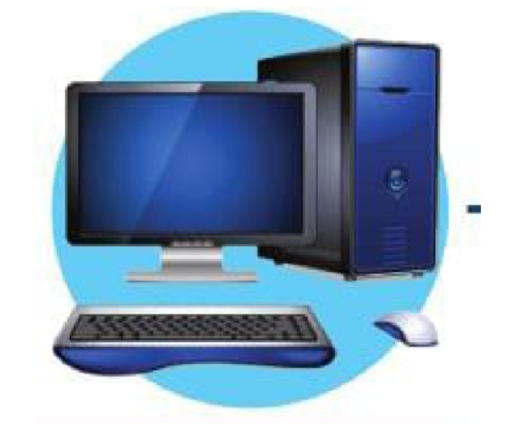

🌱 نشاط تمهيدي
أتأمل في محيطي، سواء كان المنزل أو المدرسة أو المستشفى أو الشارع
أو متاجر التسوق أو غير ذلك، ثم أكتب أسماء بعض الأجهزة الإلكترونية
وأدون توقعاتي: أي هذه الأجهزة يمكن عده حاسوبًا؟ ولماذا؟
أقارن توقعاتي بما سأتعلمه في هذا الدرس.
💻 مفهوم جهاز الحاسوب
وضح المقصود بجهاز الحاسوب؟

جهاز إلكتروني لديه القدرة على استقبال البيانات ومعالجتها وتخزينها
واسترجاعها وإخراجها في صورة معلومات وفقًا لمجموعة من الأوامر البرمجية.
ما وظيفة جهاز الحاسوب الأساسية؟
استقبال البيانات ومعالجتها وتخزينها واسترجاعها وإخراجها في صورة معلومات.
اذكر المراحل الأساسية التي يمر العمل في جهاز الحاسوب بها؟
- الإدخال.
- المعالجة.
- التخزين.
- الإخراج.
علل: لابد من دورة مستمرة لمراحل عمل جهاز الحاسوب؟
لتنفيذ الأوامر ومعالجة البيانات بفعالية.
⌨️ مرحلة الإدخال
وضح المقصود بعملية الإدخال؟
هي عملية يستقبل فيها جهاز الحاسوب البيانات والأوامر عن طريق وحدات
الإدخال، ثم يخزنها تمهيدًا لمعالجتها.
ماذا يحدث في عملية الإدخال؟
يستقبل جهاز الحاسوب البيانات والأوامر عن طريق وحدات الإدخال،
ثم يخزنها تمهيدًا لمعالجتها.
تحدث عن عملية الإدخال؟
هي عملية يستقبل فيها جهاز الحاسوب البيانات والأوامر عن طريق وحدات
الإدخال، ثم يخزنها تمهيدًا لمعالجتها.
أعطِ أمثلة على وحدات إدخال؟
- لوحة المفاتيح.
- الفأرة.
- الكاميرا.
- الميكروفون.
🧠 مرحلة المعالجة
وضح المقصود بمرحلة المعالجة؟
هي مرحلة يتم فيها معالجة البيانات عن طريق إجراء عمليات التصنيف والترتيب
والتنسيق، وكذلك إجراء العمليات الحسابية وعمليات المقارنة المنطقية
لإنتاج معلومات مفيدة.
وضح المقصود بوحدة المعالجة المركزية CPU؟
ما أهمية وحدة المعالجة المركزية CPU؟
ما وظيفة وحدة المعالجة المركزية CPU؟
تمثل دماغ الحاسوب، وهي التي تقوم بمعالجة البيانات عن طريق إجراء
عمليات التصنيف والترتيب والتنسيق، وكذلك إجراء العمليات الحسابية
وعمليات المقارنة المنطقية لإنتاج معلومات مفيدة.
كيف يتم معالجة البيانات في الحاسوب؟
يتم ذلك من خلال إجراء عمليات التصنيف والترتيب والتنسيق،
وكذلك إجراء العمليات الحسابية وعمليات المقارنة المنطقية.
علل: يتم إجراء العمليات الحسابية وعمليات المقارنة المنطقية على البيانات؟
تتم عملية المعالجة على البيانات لإنتاج معلومات مفيدة.
علل: بعد عملية المعالجة يعمل جهاز الحاسوب على تخزين المعلومات؟
لاستخدامها والرجوع إليها عند الحاجة.
🖥️ مرحلة الإخراج
وضح المقصود بمرحلة الإخراج؟
إنتاج جهاز الحاسوب مخرجًا يمكن للمستخدم مشاهدته أو سماعه أو حتى لمسه
عن طريق وحدات الإخراج.
أعطِ أمثلة على وحدات إخراج؟
- الشاشة.
- السماعة.
- الطابعة.
صنف الوحدات الآتية إلى وحدات الإدخال ووحدات الإخراج؟
🖥️ وحدات إخراج
- الشاشة.
- السماعة.
- الطابعة.
⚙️ مبدأ عمل جهاز الحاسوب
وضح مبدأ عمل جهاز الحاسوب؟
- يتم إدخال البيانات عن طريق وحدات الإدخال إلى جهاز الحاسوب.
- يتم معالجة هذه البيانات من قبل وحدة المعالجة المركزية.
- يتم تخزين هذه المعلومات لاستخدامها والرجوع إليها وقت الحاجة.
- يقدم جهاز الحاسوب المعلومات التي تمت معالجتها كمخرج عن طريق وحدات الإخراج.
📊 البيانات والمعلومات
وضح المقصود بالبيانات Data؟
مجموعة من الحقائق الأولية والعناصر غير المعالجة التي تجمع وتنظم لغرض معين.
ما أشكال البيانات؟
- أرقام.
- رموز.
- كلمات.
- صور.
- إشارات.
اذكر مثالًا على البيانات؟
- علامات الطلبة في الاختبارات.
- الأرقام المدونة في قواعد البيانات.
- التسجيلات النصية أو الصوتية.
البيانات لا تحمل معنى واضحًا وحدها حتى يتم تحليلها أو معالجتها.
وضح المقصود بالمعلومات؟
البيانات التي تم تنظيمها وتحليلها ومعالجتها على نحو يجعلها مفيدة
وذات معنى للمستخدم.
اذكر أمثلة على معلومات؟
- القائمة المنظمة لأسماء الطلبة ونتائجهم في الاختبارات.
- الرسم البياني الذي يبين نسبة الطلبة الناجحين في المواد الدراسية المختلفة.
تساعد المعلومات على فهم السياق واتخاذ القرارات التي تفضي إلى تحسين العمليات.
كيف تساعد المعلومات على فهم السياق واتخاذ القرارات التي تفضي إلى تحسين العمليات؟ أعطِ مثالًا؟
جمع البيانات المتعلقة بعلامات الطلبة في اختبار معين لتقييم أدائهم الأكاديمي،
ثم استخدام هذه البيانات في تحديد المجالات التي تتطلب تحسنًا وتطورًا.
بناءً على فهمي مبدأ عمل الحاسوب، اذكر الفرق بين البيانات والمعلومات وادعم إجابتك بأمثلة؟
البيانات لا تحمل معنى واضحًا وحدها حتى يتم تحليلها أو معالجتها.
تساعد المعلومات على فهم السياق واتخاذ القرارات التي تفضي إلى تحسين العمليات.
مثال:
جمع البيانات المتعلقة بعلامات الطلبة في اختبار معين لتقييم أدائهم الأكاديمي،
ثم يتم معالجة هذه البيانات لتصبح معلومات تساعد في تحديد المجالات التي
تتطلب تحسنًا وتطورًا.
🕰️ تاريخ تطور جهاز الحاسوب
💻 الحاسوب قديمًا
- كانت ضخمة الحجم.
- تستهلك موارد كثيرة.
- تتطلب تخصيص ميزانيات ضخمة لبنائها وإدارتها.
- تشغل غرفًا كاملة مثل جهاز ENIAC.
- تستهلك كميات هائلة من الطاقة.
- تقتصر على الأغراض العسكرية والأغراض البحثية.
علل: تقتصر استخدامات الحاسوب قديمًا على الأغراض العسكرية والأغراض البحثية؟
لأنها كانت:
- ضخمة الحجم.
- تستهلك موارد كثيرة.
- تتطلب تخصيص ميزانيات ضخمة لبنائها وإدارتها.
- تشغل غرفًا كاملة.
- تستهلك كميات هائلة من الطاقة.
💡 ملاحظة:
بالرغم من تشابه جميع أجهزة الحاسوب في آلية عملها،
فإن بعضها يختلف عن بعض في الشكل والحجم والأداء الوظيفي.
💻 أنواع أجهزة الحاسوب
🖥️ الحاسوب المكتبي
وضح المقصود بالحاسوب المكتبي؟
نوع من أجهزة الحاسوب مصمم للاستخدام في مكان ثابت مثل المكتب والمنزل،
ومناسب للاستخدامات التي تتطلب أداءً عاليًا ومساحة تخزين كبيرة.
اذكر مميزات الحاسوب المكتبي؟
- مصمم للاستخدام في مكان ثابت مثل المكتب أو المنزل.
- وجود وحدة نظام منفصلة وشاشة ولوحة مفاتيح وفأرة.
- مناسب للاستخدامات التي تتطلب أداءً عاليًا ومساحة تخزين كبيرة.
💻 الحاسوب المحمول
وضح المقصود بالحاسوب المحمول؟
جهاز شخصي صغير ومحمول يدمج جميع مكونات الحاسوب الأساسية
في وحدة واحدة خفيفة الوزن.
اذكر مميزات الحاسوب المحمول؟
- صغير ومحمول.
- يدمج مكونات الحاسوب الأساسية في وحدة واحدة خفيفة الوزن.
- تصميمه يسمح بسهولة نقله واستخدامه في أماكن مختلفة.
📱 الحاسوب اللوحي
وضح المقصود بالحاسوب اللوحي؟
جهاز محمول وذو شاشة تعمل باللمس، وهو يدمج المكونات في وحدة
واحدة من دون وجود لوحة مفاتيح مادية.
اذكر مميزات الحاسوب اللوحي؟
- جهاز محمول وذو شاشة تعمل باللمس.
- يدمج المكونات في وحدة واحدة من دون وجود لوحة مفاتيح مادية.
- خفيف الوزن وتصميمه مدمج.
- سهل الحمل والاستخدام أثناء التنقل.
علل: الحاسوب اللوحي سهل الحمل والاستخدام أثناء التنقل؟
لأنه يدمج المكونات في وحدة واحدة من دون وجود لوحة مفاتيح مادية،
وخفيف الوزن وتصميمه مدمج.
📱 الهاتف الذكي
وضح المقصود بالهاتف الذكي؟
جهاز محمول يجمع بين مزايا الهاتف التقليدي ووظائف الحاسوب.
اذكر مميزات الهاتف الذكي؟
- شاشة تعمل باللمس.
- نظام تشغيل متقدم.
- القدرة على تشغيل التطبيقات المختلفة.
- أداة متعددة الاستخدامات للاتصال والترفيه والإنتاجية والتعلم.
🔎 أنواع حواسيب أخرى
- الخادم.
- حواسيب مركزية.
- محطات العمل.
- الحواسيب العملاقة.
🌍 مجالات استخدام الحواسيب في جوانب الحياة المختلفة
- التعليم.
- الرعاية الصحية.
- التجارة.
- التسويق.
- الزراعة.
- الصناعة.
- الإحصاء.
- النقل.
- الترفيه.
🏃 استخدام الحاسوب في تحليل الأداء الرياضي
كيف يمكن استخدام أجهزة الحاسوب والبرمجيات المتخصصة في تحليل أداء الرياضيين؟
تعمل هذه الأجهزة والبرمجيات على تدوين البيانات الحركية والفسيولوجية،
وتحليل الأنماط الحركية، وإصدار تقارير عن أداء الرياضيين.
علل: يساعد الحاسوب المدربين على اتخاذ قرارات حاسمة لتحسين الأداء أثناء التدريبات والمنافسات الرياضية؟
تعمل هذه الأجهزة والبرمجيات على تدوين البيانات الحركية والفسيولوجية،
وتحليل الأنماط الحركية، وإصدار تقارير عن أداء الرياضيين، مما يساعد
المدربين على اتخاذ قرارات حاسمة لتحسين الأداء.
⌚ من الأمثلة على ذلك: استخدام الساعات الذكية للرياضيين.
🚚 استخدام الحاسوب في مجال النقل والتوصيل
كيف يساعد الحاسوب في مجال النقل والتوصيل؟
عن طريق استخدام الروبوتات والمركبات الآلية، مثل الطائرات من دون طيار
Drone والروبوتات الأرضية في عمليات التوصيل، ذلك أن هذه التقنيات تنبئ
بمستقبل تنخفض فيه التكاليف وتتسارع فيه عمليات التوصيل.
كما تستخدم الأنظمة الحاسوبية لتتبع الشحنات والحمولات، إذ يمكن للعملاء
والشركات متابعة ذلك باستخدام تقنيات حديثة مثل GPS وRFID، مما يزيد من
الشعور بالراحة والأمان والشفافية ويحسن من مستوى الخدمة.